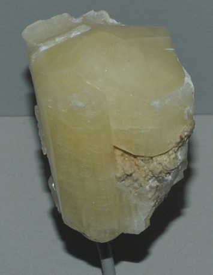

|

| Ca6Al2(SO4)2B(OH)4(OH,O)12.26H2O
This sample of charlesite is displayed in the Smithsonian Museum of Natural History. Charlesite is a sulfate mineral that contains calcium, aluminum and boron with the composition Ca6Al2(SO4)2B(OH)4(OH,O)12.26H2O. The sample at left is about 3 cm across and is from the Kalahari manganese field, Cape Province, South Africa.
|